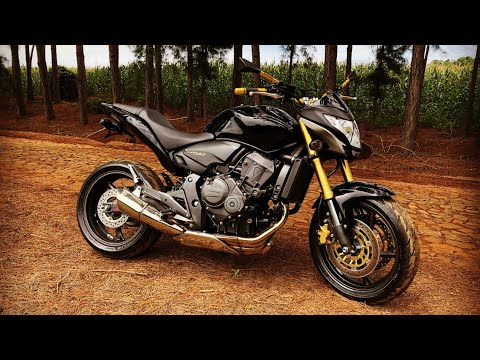

A Honda CB 600F ficou conhecida na Europa como Hornet e nos Estados Unidos como 599.
Apesar de ser considerada uma moto “naked”, por não possuir qualquer tipo de carenagem, o modelo é apelidado de “streetfighter”.
A Honda CB 600F Hornet foi lançada no Brasil em dezembro de 2004 e logo conquistou uma fatia do mercado. E diferentes públicos se apaixonaram pela moto.
De um lado, havia os fãs de superesportivas que se impressionaram com o desempenho da Hornet e sua velocidade máxima de mais de 200 km/h. 